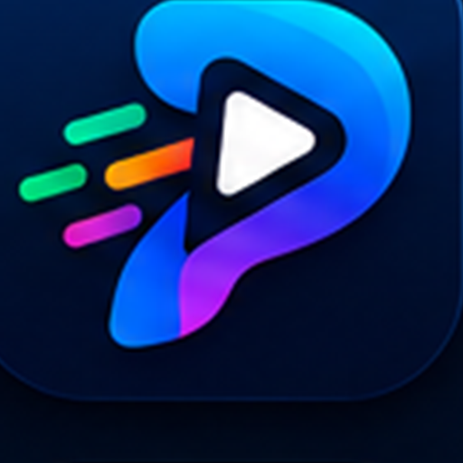

A live Progressive Web App for sport, board games, pub games and gaming — connecting players and venues across Serbia, with a path to the Western Balkans and the EU.
Prepared for Ready4EIC — Accessing funding and enabling growth
European Commission programme for innovative SMEs in enlargement countries
We are applying for Round 1 capacity-building — then Round 2 investment readiness and European funding pathways (Horizon Europe / EIC).
Founder-led digital startup from Serbia. Brand: Plejko. Born from a real gap: wanting a football game abroad and finding neither the pitch nor the people. Now a location-based play network with a trust layer and venue tools for sports SMEs.
Product-ready (software TRL 6–7). Pre-scale go-to-market. Seeking structured growth planning, unit economics, investor engagement and a realistic EU funding route — not a grant today, a preparation programme.
Accept Plejko into Ready4EIC Round 1 with Innovation Advisors at Science Technology Park Belgrade. Ambition: qualify for Round 2 (scaling & investment readiness).
On holiday in another country I wanted to play football — and could find neither the fields nor anyone to play with. Locals fail the same way every week, in closed WhatsApp groups. Venues stay empty. Newcomers never get invited.
Finding enough players at the right hour is social friction, not a sports problem. Groups die in chat threads. Newcomers never get invited.
Small sports venues (the backbone of amateur sport) have no digital booking, no community feed, no show-up data. Demand is invisible.
Without reputation, cancellations are free. Organisers stop hosting. The marketplace never reaches critical mass.
Playtomic = racket booking. Meetup = generic events. Instagram = discovery without operations. Nothing is built for Balkan pickup culture across sport + games.
That holiday moment is not a tourist anecdote — it is the product. The same gap hits travelers, students, diaspora and locals. Across enlargement countries, play is still unbundled into private chats: a mobility, health and SME-digitalisation problem.
One installable web app. Map-first discovery. Formal venues and informal meetups. Trust, payments split, chat and ratings after the game.
See nearby matches and fields on a live map. Filter by preferred games. Get push when something opens in your radius.
Create or join. Waitlist if full. Court approval for registered venues. Cost splitter. Quick chat. Reliability stays visible.
Show up. Complete the match. Rate teammates (skill + fair play). Trust score updates. Come back next week.
Football, basketball, padel, running…
Catan, chess, UNO, D&D…
Darts, billiards, bowling, quiz…
FIFA, LoL, CS2, Valorant…
Stack (built, not mocked): React + TypeScript PWA · Node/Express · MongoDB · Socket.IO real-time · Web Push · Cloudinary · deployed on Render (EU/Frankfurt). Installable on home screen — no app-store gate for first markets.
Ready4EIC scope: innovative product + business model. We are digital / social-tech, not deep-tech hardware — honest positioning, high regional relevance.
Reliability score, timed cancellation penalties, no-show marking, fair-play ratings. This is the missing layer that WhatsApp cannot provide — and the reason two-sided marketplaces usually stall.
Registered courts (approval workflow, overlap control, deadlines) plus informal pins (parks, homes, pubs). Captures both the SME venue economy and grassroots pickup culture.
One profile across football, Catan, darts and FIFA. Cross-category liquidity is a business-model innovation: evening board-game players become weekend teammates.
No store tax, instant updates, Web Push, works on mid-range Android first. Designed for Serbia and replicable across AL, BA, ME, MK, XK, TR, MD, GE, UA.
Same culture of pickup sport, café games and late-night squads — fragmented digital tools. We scale language-by-language, city-by-city.
Players pay for pitch time, equipment, drinks. Venues lose yield on empty hours. Brands want authentic local sport audiences. The platform sits between all three — starting with venue digitalisation (B2B) and network density (B2C free).
PWA + push is mature. Post-covid social rebuild is incomplete. Court sports (padel, small-sided football) are investing in facilities. Young users will not download a 12th native app — they will add an icon if the match is tonight.
Players grow the graph. Venues and promotions pay for yield. Ready4EIC workstream: turn this logic into a financial model, pricing tests and an investor narrative.
Free for players. Court owners list fields. Goal: density in 1–2 cities. Cost splitter already in-product (offline payment mark-off).
Subscription for field management, featured placement, reservation tools. Optional commission on confirmed bookings once volume exists.
Sports brands, pubs, board-game cafés: sponsored matches, featured events, local campaigns to a geo-qualified audience.
Organiser tools, verified identity, tournament mode, white-label for clubs / municipalities. Open to EU public-sport partnerships.
Unit-economics hypothesis (to be stress-tested in the programme): one active court SME + recurring weekly matches can justify a software fee far below a no-show’s lost slot. Network value compounds; CAC should stay low via geo-push and share-links rather than paid UA in year one.
| Pickup + trust | Venue ops | Multi-category | Local language / Balkans | No-show cost | |
|---|---|---|---|---|---|
| Plejko | Yes | Yes | Sport + games + pub + e-sport | Serbian-first | Reliability score |
| WhatsApp / IG | Closed groups | No | Ad hoc | Native | None |
| Playtomic | Booking-led | Strong (rackets) | Narrow sports | EU, not RS-native community | Cancellation policy |
| Meetup / FB events | Events, not matches | No court workflow | Broad | Generic | RSVP theatre |
Defensibility: local supply (courts + informal spots) + reputation graph + category breadth. Data on who actually shows up is the asset. We treat Playtomic as a signal that venue digitalisation funds, not as a clone target.
No vanity user metrics in this deck. The product exists; the growth system, funding story and regional GTM do not yet — that is exactly why Ready4EIC fits.
Q1: 1–2 city density + 20–40 partner venues. Q2: payments / invoicing experiments, organiser tools. Q3: Montenegro / BiH language pack + hub intros. Q4: investor materials + Horizon/EIC call mapping.
These gaps are the curriculum, not a reason to wait.
Programme fit: innovative digital service from Serbia, seeking funding readiness, investor engagement, and a serious look at Horizon Europe / EIC — delivered with STP Belgrade.
Plejko is already software. Ready4EIC is how we become a fundable, scalable company — with STP Belgrade as the local innovation hub.
The default way to gather a match in the Western Balkans — then a European social-play layer that makes empty courts and lonely evenings rarer.
Admit Plejko to Ready4EIC Round 1 (online via Webex, from September 2026). Assign Innovation Advisors at Science Technology Park Belgrade.
Brand: Plejko
Country: Serbia
Hub: STP Belgrade
Tagline: Pronađi · Okupi · Igraj
Legal name, founder and email: as submitted in the EUSurvey form.